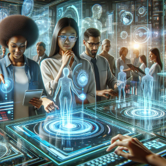
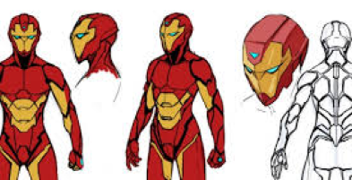
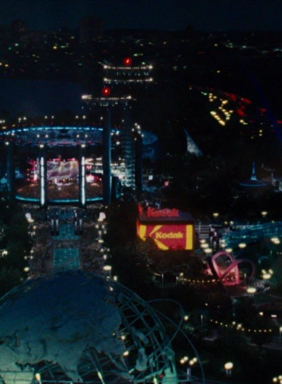

Iron Man 2, Une vision futuriste de la technologie immersive
Plongez dans l'univers palpitant des super-héros avec "Iron Man 2", la suite explosive du blockbuster qui a conquis le monde. Réalisé par Jon Favreau et sorti en 2010, ce film d'action vous propulse à nouveau dans les aventures trépidantes de Tony Stark, l'inventeur milliardaire devenu Iron Man. Ce film offre un aperçu fascinant des technologies du futur qui résonne étonnamment avec notre concept de télévision immersive.
Des interfaces holographiques* à la réalité augmentée
L'un des aspects les plus marquants d'Iron Man 2 est son utilisation d'interfaces holographiques interactives. Tony Stark manipule des projections 3D dans l'air, une technologie qui préfigure notre idée de télévision transformant physiquement l'espace. Bien que le film se concentre sur des hologrammes plutôt que sur la réalité augmentée, le concept d'environnement interactif est clairement présent.

L'armure d'Iron Man une immersion totale
L'armure d'Iron Man elle-même peut être vue comme une forme extrême de réalité augmentée. Elle enveloppe complètement son utilisateur, lui fournissant des informations en temps réel et augmentant ses capacités physiques. Cette fusion entre l'homme et la technologie évoque l'immersion totale que notre télévision du futur vise à créer.

Schéma de l'armure d'Iron Man
La Stark Expo un monde transformé par la technologie
La Stark Expo présentée dans le film est un exemple frappant de la façon dont la technologie peut transformer un environnement. Bien que temporaire, cette exposition montre comment un espace peut être radicalement modifié pour créer une expérience immersive, tout comme notre télévision du futur transformerait une pièce entière.

Image de la Stark Expo
Si vous souhaitez en savoir plus sur le film Iron man 2, cliquez ici
Si vous souhaitez regarder le court extrait de Tony Starks manipulant les hologrammes pour appuyer mes propos, cliquez ici
Si vous souhaitez accéder à l’article concernant le réalisateur Jon Favreau, cliquez ici
Si vous souhaitez accéder à l’article concernant l’objet du futur où le site est concentré, cliquez ici